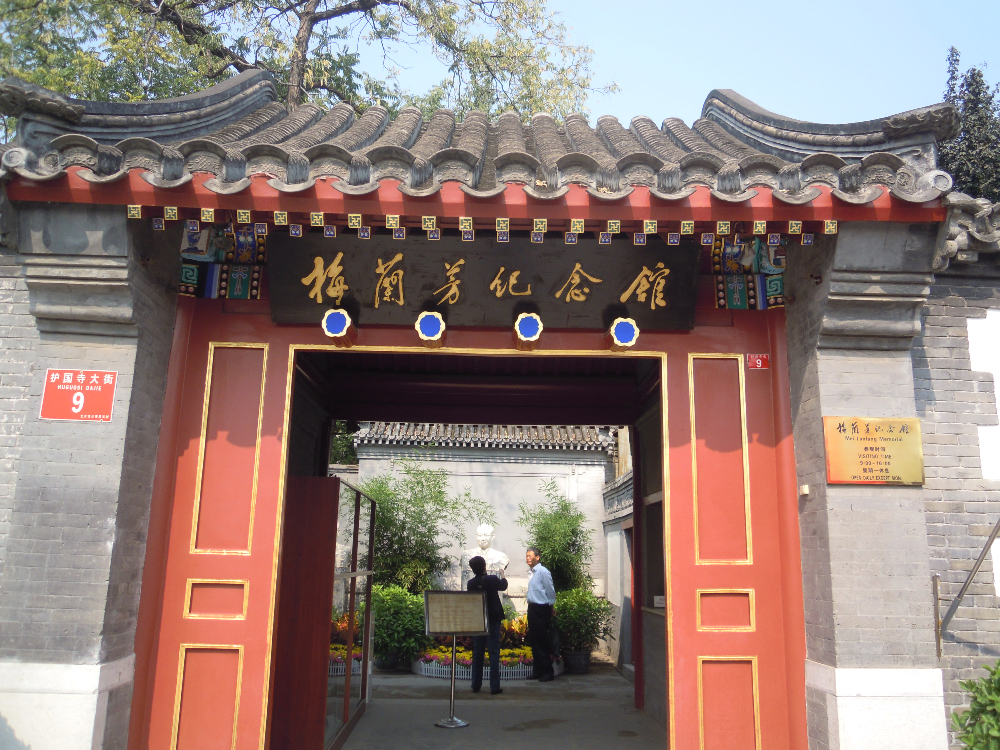

Mei Lanfang Memorial Museum
From： baike.baidu.com

The Mei Lanfang Memorial Museum is a typical Beijing courtyard. It was originally part of the residence of Prince Qingqin Mansion in the late Qing Dynasty, covering an area of more than 1,000 square meters. Mr. Mei Lanfang spent the last ten years of his life here.
On the vermilion gate hangs a plaque “Mei Lanfang Memorial Museum” inscribed by Deng Xiaoping himself. Entering into it, a bust sculpture of Mei Lanfang is placed among the bamboo grove in front of the bluestone screen wall. There are two persimmon trees and two begonia trees in the courtyard, taking the meaning of “peace in all things”.
The museum has two parts. The main courtyard preserves the original appearance of the former residence, and all furnishings in the reception room, study, bedroom and living room are displayed in accordance with the original state of Mei Lanfang before his death. The east and west exhibition rooms are served as thematic exhibitions, which are updated from time to time. The exhibition room of the outer courtyard introduces the artistic and social activities throughout his life with a large number of precious pictures.
 330445074@qq.com
330445074@qq.com